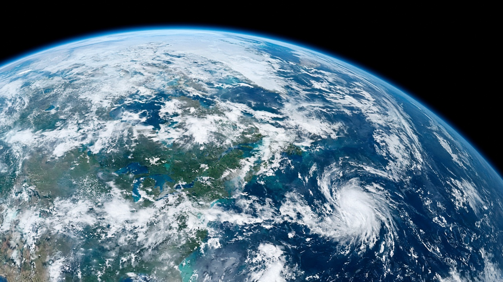
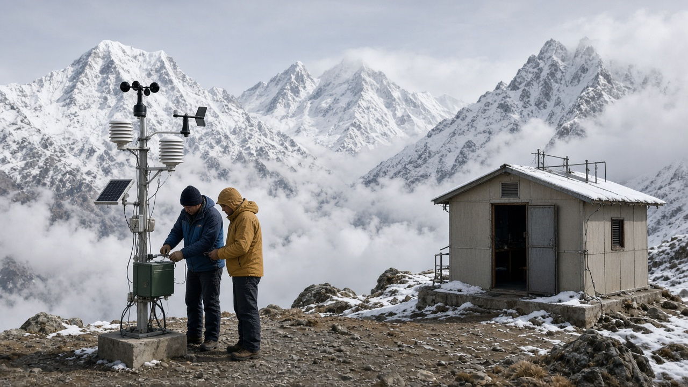
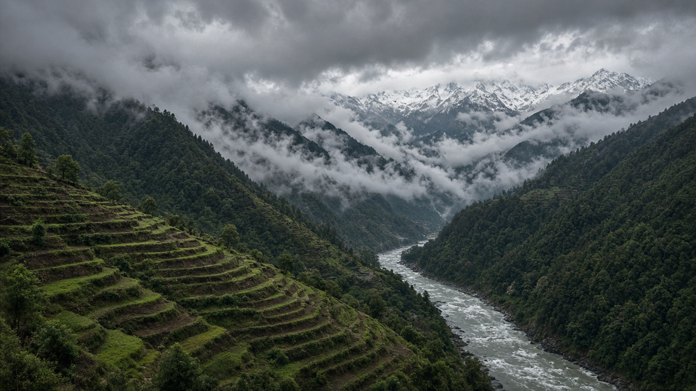

Climate Modeling & Future Predictions
Published on July 22, 2026

Climate models are sophisticated computer simulations that represent interactions among the atmosphere, oceans, land surface, ice, and biosphere to project how climate may change under different greenhouse gas scenarios. Built on fundamental physics and chemistry equations, models divide the planet into three-dimensional grids and step forward in time, calculating temperature, precipitation, wind, and other variables. No single model is perfect, so researchers compare ensembles of models and scenarios to characterize likely ranges of future change rather than one deterministic forecast.
Shared socioeconomic pathways and representative concentration pathways describe alternative futures based on assumptions about population, economic growth, energy use, and policy ambition. Low-emission scenarios project warming that may stay near 1.5 to 2 degrees Celsius if mitigation accelerates sharply; high-emission scenarios lead toward three degrees or more with severe consequences. Scenario planning helps engineers design bridges, dams, and drainage systems for lifetimes that will span a warmer, more volatile climate. Regional downscaling translates global model output into finer-resolution projections for areas such as the Himalayas, helping planners assess monsoon shifts, snowpack decline, and extreme event frequency at scales relevant to agriculture and infrastructure.
Models improve continuously as computing power grows, observations expand, and processes such as cloud formation and carbon cycle feedbacks are better understood. Uncertainties remain—especially for local rainfall, tipping points, and compound extremes—but models have successfully reproduced past warming and seasonal patterns, building confidence in their broad projections. Comparing multiple models helps identify robust trends that appear across simulations regardless of specific assumptions. Policymakers use model results to set emission targets, design infrastructure standards, and evaluate risk. For the public, understanding that climate predictions are probabilistic ranges—not exact daily forecasts—supports informed debate about how much risk society is willing to accept and how quickly action must follow.

जलवायु मोडेलहरू वातावरण, महासागर, भू-पृष्ठ, बरफ र जीवमण्डल बीचको अन्तरक्रियालाई प्रतिनिधित्व गर्ने परिष्कृत कम्प्युटर अनुकरणहरू हुन्, जसले विभिन्न ग्रीनहाउस ग्यास परिदृश्यअन्तर्गत जलवायु कसरी परिवर्तन हुन सक्छ भनेर अनुमान लगाउँछन्। आधारभूत भौतिक र रासायनिक समीकरणहरूमा आधारित, मोडेलहरूले ग्रहलाई त्रि-आयामिक ग्रिडमा विभाजन गर्छन् र समयअनुसार अगाडि बढ्छन्, तापक्रम, वर्षा, हावा र अन्य चरहरू गणना गर्दै। कुनै एक मोडेल पूर्ण हुँदैन, त्यसैले अनुसन्धानकर्ताहरूले भविष्यका परिवर्तनका सम्भावित दायराहरू चित्रण गर्न एक निश्चित पूर्वानुमानको सट्टा मोडेल र परिदृश्यका समूहहरू तुलना गर्छन्।
साझा सामाजिक-आर्थिक मार्गहरू र प्रतिनिधि सान्द्रता मार्गहरूले जनसंख्या, आर्थिक वृद्धि, ऊर्जा प्रयोग र नीतिको महत्वाकांक्षाबारे धारणाहरूमा आधारित वैकल्पिक भविष्यहरू वर्णन गर्छन्। कम उत्सर्जन परिदृश्यहरूले शमन तीव्र रूपमा बढ्यो भने १.५ देखि २ डिग्री सेल्सियस नजिकै रहने तापक्रम वृद्धि अनुमान गर्छन्; उच्च-उत्सर्जन परिदृश्यहरूले तीन डिग्री वा बढी तर्फ लैजान्छन् जसको गम्भीर परिणाम हुन्छ। परिदृश्य योजनाले इन्जिनियरहरूलाई पुल, बाँध र जल निकास प्रणालीहरू तात्कालिक, अस्थिर जलवायुमा लामो समय टिक्ने गरी डिजाइन गर्न मद्दत गर्छ। क्षेत्रीय डाउनस्केलिङले विश्वव्यापी मोडेल नतिजालाई हिमालय जस्ता क्षेत्रहरूका लागि उच्च रिजोल्युसन अनुमानमा अनुवाद गर्छ, जसले योजनाकारहरूलाई कृषि र पूर्वाधारसँग सम्बन्धित स्तरमा मनसुन परिवर्तन, हिउँको ह्रास र चरम घटनाको आवृत्ति मूल्याङ्कन गर्न मद्दत गर्छ।
कम्प्युटिङ शक्ति बढ्दै जाँदा, अवलोकनहरू विस्तार हुँदै र बादल निर्माण र कार्बन चक्र प्रतिक्रिया जस्ता प्रक्रियाहरू राम्रोसँग बुझिँदै गर्दा मोडेलहरू निरन्तर सुधार हुन्छन्। अनिश्चितताहरू बाँकी छन्—विशेष गरी स्थानीय वर्षा, टिपिङ बिन्दु र संयुक्त चरम घटनाहरूका लागि—तर मोडेलहरूले विगतको तापक्रम वृद्धि र मौसमी ढाँचाहरू सफलतापूर्वक पुन: उत्पादन गरेका छन्, जसले तिनीहरूका व्यापक अनुमानहरूमा विश्वास बढाएको छ। धेरै मोडेलहरू तुलना गर्दा विशिष्ट धारणाहरू जस्तैसुकै भए पनि अनुकरणहरूमा देखा पर्ने मजबुत प्रवृत्तिहरू पहिचान गर्न मद्दत हुन्छ। नीति निर्माताहरूले उत्सर्जन लक्ष्य निर्धारण, पूर्वाधार मापदण्ड डिजाइन र जोखिम मूल्याङ्कनका लागि मोडेल नतिजा प्रयोग गर्छन्। जनताका लागि, जलवायु पूर्वानुमानहरू सम्भाव्य दायरा हुन्—दैनिक सटीक पूर्वानुमान होइन—भन्ने बुझाइले समाज कति जोखिम स्वीकार गर्न तयार छ र कति छिटो कार्य गर्नुपर्छ भन्ने बारे सूचित बहसलाई समर्थन गर्छ।

जलवायु मॉडल परिष्कृत कंप्यूटर अनुकरण हैं जो वायुमंडल, महासागर, भू-पृष्ठ, बर्फ और जीवमंडल के बीच अंतःक्रियाओं का प्रतिनिधित्व करते हैं ताकि विभिन्न ग्रीनहाउस गैस परिदृश्यों के तहत जलवायु कैसे बदल सकती है, इसकी भविष्यवाणी की जा सके। मौलिक भौतिकी और रसायन विज्ञान के समीकरणों पर आधारित, मॉडल ग्रह को त्रि-आयामी ग्रिड में विभाजित करते हैं और समय के साथ आगे बढ़ते हुए तापमान, वर्षा, हवा और अन्य चरों की गणना करते हैं। कोई एक मॉडल पूर्ण नहीं होता, इसलिए शोधकर्ता भविष्य के परिवर्तन की संभावित सीमाओं को चित्रित करने के लिए एक निश्चित पूर्वानुमान के बजाय मॉडल और परिदृश्यों के समूहों की तुलना करते हैं।
साझा सामाजिक-आर्थिक मार्ग और प्रतिनिधि सांद्रता मार्ग जनसंख्या, आर्थिक वृद्धि, ऊर्जा उपयोग और नीति महत्वाकांक्षा के बारे में धारणाओं के आधार पर वैकल्पिक भविष्यों का वर्णन करते हैं। कम उत्सर्जन परिदृश्य १.५ से २ डिग्री सेल्सियस के निकट तापन का अनुमान लगाते हैं यदि शमन तेजी से बढ़े; उच्च-उत्सर्जन परिदृश्य तीन डिग्री या अधिक की ओर ले जाते हैं जिनके गंभीर परिणाम होते हैं। परिदृश्य योजना इंजीनियरों को पुल, बांध और जल निकासी प्रणालियों को गर्म, अधिक अस्थिर जलवायु में लंबे समय तक टिकने के लिए डिजाइन करने में मदद करती है। क्षेत्रीय डाउनस्केलिंग वैश्विक मॉडल आउटपुट को हिमालय जैसे क्षेत्रों के लिए उच्च रिज़ॉल्यूशन प्रक्षेपण में अनुवादित करती है, जिससे योजनाकार मानसून परिवर्तन, बर्फबारी की कमी और चरम घटनाओं की आवृत्ति का कृषि और बुनियादी ढाँचे से संबंधित स्तर पर मूल्यांकन कर सकें।
कंप्यूटिंग शक्ति बढ़ने, अवलोकनों के विस्तार होने, और बादल निर्माण तथा कार्बन चक्र प्रतिक्रिया जैसी प्रक्रियाओं की बेहतर समझ के साथ मॉडल लगातार सुधरते रहते हैं। अनिश्चितताएँ बनी रहती हैं—विशेष रूप से स्थानीय वर्षा, टिपिंग पॉइंट और संयुक्त चरम घटनाओं के लिए—लेकिन मॉडलों ने अतीत के तापन और मौसमी पैटर्न को सफलतापूर्वक पुन: उत्पादित किया है, जिससे उनके व्यापक प्रक्षेपणों में विश्वास बढ़ा है। कई मॉडलों की तुलना विशिष्ट धारणाओं की परवाह किए बिना अनुकरणों में दिखाई देने वाले मजबूत रुझानों की पहचान करने में मदद करती है। नीति निर्माता उत्सर्जन लक्ष्य निर्धारित करने, बुनियादी ढाँचे के मानक डिजाइन करने और जोखिम का मूल्यांकन करने के लिए मॉडल परिणामों का उपयोग करते हैं। जनता के लिए, यह समझना कि जलवायु पूर्वानुमान संभाव्य सीमाएँ हैं—दैनिक सटीक पूर्वानुमान नहीं—समाज कितना जोखिम स्वीकार करने को तैयार है और कितनी जल्दी कार्रवाई आवश्यक है, इस पर सूचित बहस का समर्थन करता है।